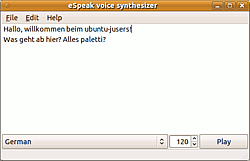

eSpeak
Dieser Artikel wurde für die folgenden Ubuntu-Versionen getestet:
Ubuntu 16.04 Xenial Xerus
Ubuntu 14.04 Trusty Tahr
Zum Verständnis dieses Artikels sind folgende Seiten hilfreich:
eSpeak  ist ein Open-Source-Sprach-Synthesizer, der Ausgaben in vielen Sprachen erzeugen kann. eSpeak ist eine Weiterführung des Programms "speak", und wird seit 1995 entwickelt. Die Spracherzeugung erfolgt vollständig synthetisch (Formantsynthese), was kleine Sprachdateien und hohes Sprechtempo ermöglicht, aber zu künstlicheren Ergebnissen führt als bei größeren Sprach-Synthesizern, die auf natürlichen Sprachaufnahmen basieren. Es handelt sich um ein reines Kommandozeilenwerkzeug, allerdings existiert eine eigene einfache grafische Oberfläche. Eine direkte Aufnahme der Ausgabe als .wav-Datei ist möglich. Es dient auch als Basis für andere Programme (z.B. Gespeaker), die zur Spracherzeugung auf eSpeak zurückgreifen.
ist ein Open-Source-Sprach-Synthesizer, der Ausgaben in vielen Sprachen erzeugen kann. eSpeak ist eine Weiterführung des Programms "speak", und wird seit 1995 entwickelt. Die Spracherzeugung erfolgt vollständig synthetisch (Formantsynthese), was kleine Sprachdateien und hohes Sprechtempo ermöglicht, aber zu künstlicheren Ergebnissen führt als bei größeren Sprach-Synthesizern, die auf natürlichen Sprachaufnahmen basieren. Es handelt sich um ein reines Kommandozeilenwerkzeug, allerdings existiert eine eigene einfache grafische Oberfläche. Eine direkte Aufnahme der Ausgabe als .wav-Datei ist möglich. Es dient auch als Basis für andere Programme (z.B. Gespeaker), die zur Spracherzeugung auf eSpeak zurückgreifen.
Installation¶
eSpeak liegt in den Paketquellen vor und ist in einer Standardinstallation bereits vorhanden, installiert [1] werden müssen ggf. die Pakete
espeak (main)
 mit apturl
mit apturl
Paketliste zum Kopieren:
sudo apt-get install espeak
sudo aptitude install espeak
Bedienung¶
Die allgemeine Syntax auf der Kommandozeile[2] lautet:
espeak [OPTIONEN(EN)] ["TEXT IN ANFÜHRUNGSZEICHEN"]
Die Ausgabe kann über vielfältige Optionen angepasst werden; dies betrifft die Sprachgeschwindigkeit, -höhe, -lautstärke, Länge der Pause, Emphasis für Hauptwörter etc. Auch lassen sich unterschiedliche Eingabe-Formate verwenden. eSpeak kann außerdem verwendet werden, um Ausgaben in phonetischer Umschrift zu erzeugen, und auch zum Erstellen neuer Sprachanweisungen aus vorliegenden Wörterbuch-Dateien. Es können auch mbrola-Stimmen verwendet und bearbeitet werden, sie werden über spezielle Kürzel aufgerufen (z.B. mb-de4). Unter Ubuntu 16.04 funktioniert allerdings - zumindest unter 64-bit-Systemen - das in den Quellen befindliche mbrola-Paket nicht (siehe Hinweis bei mbrola.
Hinweis:
Wenn es keine Ausgabe zu geben scheint, ist ggf. die Wiedergabe für das Alsa-Plugin in den Soundeinstellungen stumm gestellt. Das scheint bei Erstaufruf nach Systemstart aus unerfindlichen Gründen der Fall zu sein!
Beispiele¶
espeak -vde "zu sprechender Text" # mbrola-Sprache über -vmb-deX
spricht den angegebenen Text nach den Regeln der deutschen Sprache.
espeak -vde -f ZU_SPRECHENDE_TEXTADATEI
gibt die angegebene Datei in gleicher Weise aus.
espeak -vde -f -m ZU_SPRECHENDE_HTML
gibt die angegebene HTML-Datei in gleicher Weise aus.
espeak -vde -f ZU_SPRECHENDE_TEXTDATEI -w Sprachausgabe
schreibt die Textdatei als .wav-Klangdatei gewandelt.
Optionen¶
| eSpeak-Optionen | |
| Option | Funktion |
-f TEXTDATEI | wiederzugebende Textdatei |
--stdin | Text der Standardeingabe (stdin) statt einer Textdatei wiedergeben |
Wenn weder -f noch --stdin angeben ist, werden eingegebene Wörter gesprochen, oder der Text der Standardeingabe zeilenweise ausgegeben. | |
-a WERT | Lautstärke, Werte von 0 bis 200, Standard ist 100 |
-g WERT | Wort-Zwischenräume. Pause zwischen den Wörtern, in 10ms-Einheiten bei Standardgeschwindigkeit (siehe -s) |
-k WERT | Gebe Großbuchstaben wieder: 1= Klicklaut bei einem Großbuchstaben oder zwei Klicklaute, wenn das Wort nur aus Großbuchstaben besteht, 2= dem Wort "capitals", höherer Werte führen zu einer Erhöhung der Stimmlage (z.B. -k20) |
-l WERT | Zeilenlänge. Wenn nicht 0 gesetzt ist (Standardeinstellung), werden Zeilen, die kürzer als diese Länge sind, als Phrasen-Ende betrachtet |
-p WERT | Anpassung der Tonhöhe,Werte von 0 bis 99, Standard ist 50 |
-s WERT | Sprechgeschwindigkeit in Wörtern pro Minute, Werte von 80 bis 450, Standard ist 175 |
-v STIMMNAME | Verwendet die Sprachdatei dieses Namens aus /usr/share/espeak-data/voices, erweiterbar um [+Varianten], +m1, +m2, +m3, +m4, +m5, +m6, +m7, männliche Stimmen, +f1, +f2, +f3, +f4, weibliche Stimmen, sowie +croak (Krächzen) and +whisper (Flüstern) - die Varianten sind für MBROLA-Stimmen nicht nutzbar! |
-w WAVE_DATEINAME | Ausgabe wird in diese Wave-Datei geschrieben, statt sie direkt auszugeben |
-b WERT | Textencodierung der Eingabedatei, 1=UTF8, 2=8 bit, 4=16 bit |
-m | Verarbeitet SSML, und ignoriert andere < >-Tags |
-q | Keine Stimmausgabe (ggf. nützlich mit -x) |
-x | Schreibt Phoneme-Abkürzungen in einer SAMPA-Notierung Internationales_Phonetisches_Alphabet (IPA) an stdout aus |
--path="PFAD" | Legt den Pfad fest, in dem sich das eSpeak-Daten-Verzeichnis befindet |
--pho | Schreibt mbrola-Phonem-Daten (.pho) nach stdout oder in die mit --phonout festgelegte Datei |
--phonout="DATEINAME" | Schreibt die Phonem-Ausgabe von -x -X --ipa and --pho in diese Datei |
--punct="ZEICHEN" | Spricht die Zeichennamen der angegebenen Satzzeichen, wenn =ZEICHEN ausgelassen wird, werden alle Satzzeichen gesprochen. |
--split="MINUTEN" | Beginnt alle angegebenen Minuten eine neue .wav-Datei, mit -w verwenden |
--stdout | Schreibt die Sprachausgabe nach stdout |
--voices=SPRACHE | Listet die verfügbaren Stimmen der angegebenen Sprache auf; ohne Sprachangabe werden alle verfügbaren Stimmen aufgelistet. Installierte mbrola-Stimmen werden nur bei Angabe der Sprache ausgegeben, z.B. espeak --voices=de |

Weitere Informationen in der Online-Dokumentation
Grafische Oberfläche¶
Nach Installation des Paketes
espeak-gui (universe, optional, einfache grafische Oberfläche, nur in Ubuntu 14.04 vorhanden )
mit apturl
Paketliste zum Kopieren:
sudo apt-get install espeak-gui
sudo aptitude install espeak-gui
findet sich das Programm in GNOME unter "Anwendungen -> Multimedia -> eSpeak speech synthesizer"
Die Bedienung ist recht einfach; im Fenster wird der wiederzugebende Text eingegeben/einkopiert; unterhalb der Eingabe lässt sich die Sprache sowie die Sprechgeschwindigkeit in Wörtern pro Minute festlegen. Weitere Einstellungen, wie sie z.B. Gespeaker bietet, sind momentan nicht möglich, auch die mbrola-Stimmen lassen sich nicht einstellen.
Tastenkürzel¶
| eSpeak-GUI | |
| Tasten | Funktion |
| Strg + N | "File -> Neu" |
| ⇧ + Strg + N | "File -> New Window" |
| Strg + O | "File -> Öffnen" |
| Strg + S | "File -> Speichern unter" |
| Strg + Q | "File -> Beenden" |
| Strg + X | "Edit -> Ausschneiden" |
| Strg + C | "Edit -> Kopieren" |
| Strg + V | "Edit -> Einfügen" |
| Entf | "Edit -> Löschen" |
Alternativen¶
Sprachausgabe
 - Übersichtsseite
- ÜbersichtsseiteFestival - weiterer Sprachgenerator, basierend auf "natürlichen" Stimmen
Gespeaker - Frontend mit komfortablerer Bedienung als die hier vorgestellte GUI
Skripte/Book-To-MP3 - Skript zum Vorlesen aus etlichen Dateiformaten, Skripte/pdf2mp3 - ähnliches Python-Skript
KMouth - KDE-Programm zur Sprachausgabe
xsane2speech - Dokumente direkt aus XSane heraus "vorlesen" und als .mp3 archivieren
Omilo - GUI zur Sprachausgabe für Mary, Flite und Festival
- Erstellt mit Inyoka
-
 2004 – 2017 ubuntuusers.de • Einige Rechte vorbehalten
2004 – 2017 ubuntuusers.de • Einige Rechte vorbehalten
Lizenz • Kontakt • Datenschutz • Impressum • Serverstatus -
Serverhousing gespendet von